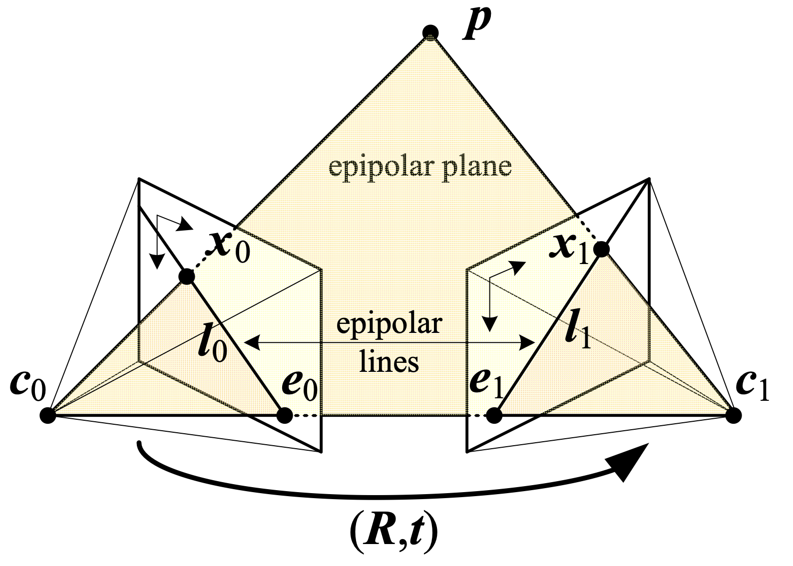
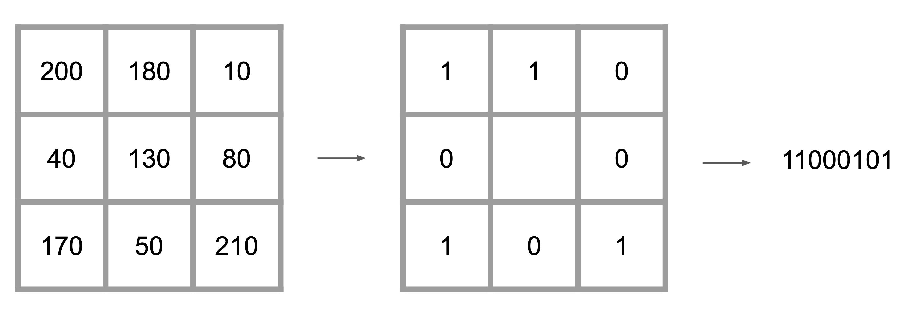
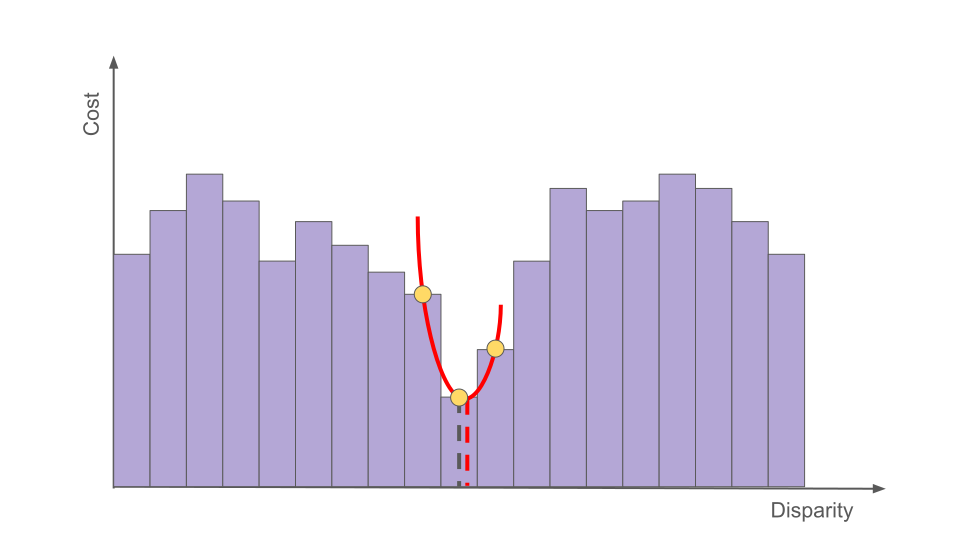
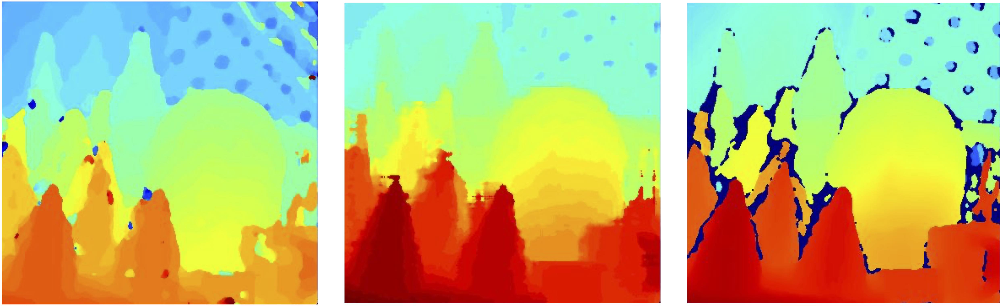
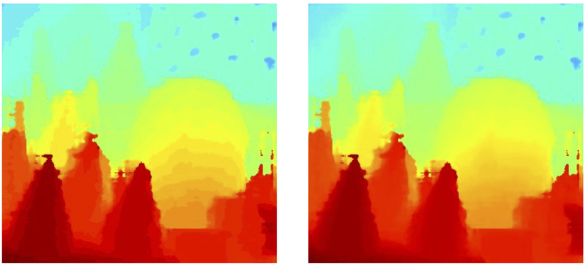
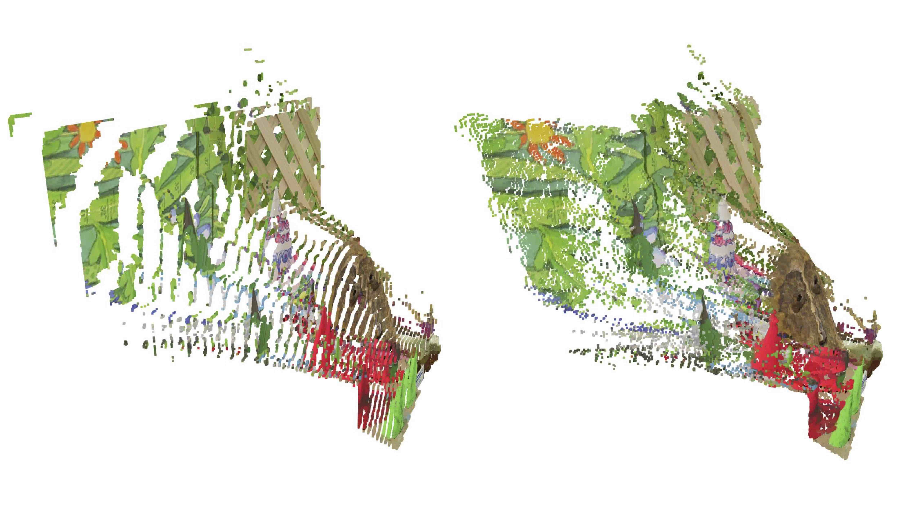
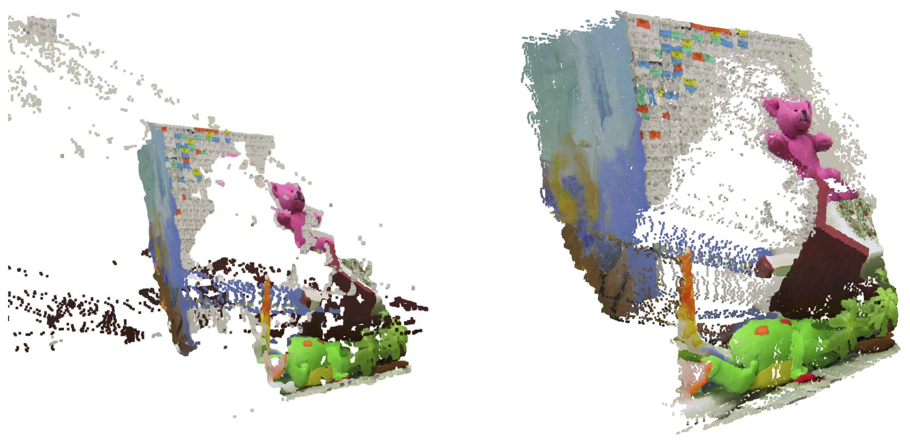

Stereo Reconstruction from Scratch
06. May 2025
This blog post describes my implementation of a stereo matching algorithm for rectified images from scratch. I will explain the theory behind stereo matching and walk you through my implementation step by step. The project is implemented in Python and the code is available on GitHub. Apart from some image processing basics and Python fundamentals, no prior knowledge is required. Feel free to check it out and contact me if you have any questions or comments.

Theory
Stereo matching is the process of taking two images and constructing a 3D model of the scene by identifying corresponding pixels in both images. The objective is to convert 2D pixel positions into 3D depth information
Richard Szeliski, 2022

Richard Szeliski, 2022
and are the centers of the left and right cameras for a given stereo setup. The baseline is the line connecting and . A real-world 3D point projects onto the image planes as points and . The key geometric constraint is that the three points , , and define a plane called the epipolar plane. Each epipolar plane intersects the image planes along lines called epipolar lines, denoted as and
Richard Hartley and Andrew Zisserman, 2003
Richard Hartley and Andrew Zisserman, 2003
Although epipolar geometry applies to any roto-translation between and , images are often rectified in practice
Richard Szeliski, 2022
Richard Szeliski, 2022
where is called the disparity at pixel location . This means that corresponding points can be found along the same horizontal line, by simply adding an offset. Collecting the disparities for all image locations produces the disparity map. For the purposes of this project, it is always assumed that the input images are rectified. Once the disparity is known, the following projection equation can be rearranged to obtain the depth of the point
Here is the focal length (a property of the camera) and is the baseline (the distance between the two cameras). The main question is now, how can be computed?
As the image capturing process is inherently affected by noise, the exact disparity cannot be computed. Therefore, the disparity needs to be estimated. Various approaches exist for estimating the disparity. Discussing all of them is beyond the scope of this blog post. We focus on two popular groups of approaches:
- Local methods: These methods aggregate the matching cost by summing or averaging over a support region "Computer vision: algorithms and applications"[1] . A cost function is computed over this region, and the estimated disparity is then the disparity that minimizes the cost
Richard Szeliski, 2022 - Global methods: These methods are formulated within an energy-minimization framework, where the objective is to find a disparity function that minimizes a global energy
where measures how well the disparity function agrees with the input image pair, and enforces smoothness constraints, i.e., that neighboring pixels should have similar disparity values "Computer vision: algorithms and applications"[1] . Performing this energy minimization in the 2D plane is known to be NP-hard
Richard Szeliski, 2022"Computer vision: algorithms and applications"[1] . However, for the 1D case, efficient algorithms exist to solve the energy-minimization problem
Richard Szeliski, 2022"Fast approximate energy minimization via graph cuts"[3] . Combining multiple 1D optimization directions and aggregating their path costs leads to semi-global matching methods
Yuri Boykov, Olga Veksler, and Ramin Zabih, 2002"Stereo processing by semiglobal matching and mutual information"[4] . Semi-global matching algorithms are both efficient and perform well in practice
Heiko Hirschmuller, 2007"Computer vision: algorithms and applications"[1] .
Richard Szeliski, 2022
In the next section, one implementation from each group is described in detail.
Block Matching Implementation
Block matching is one of the simplest local stereo matching approaches. In this project, block matching is implemented by moving a window along the corresponding horizontal line in the right image for every pixel in the left image . For every offset , the cost is computed, where is the fixed maximum disparity. In the implementation, the mean squared error is used as the matching cost function
The estimated disparity is then the disparity with the lowest cost
In the project implementation, a window size of 15 and a maximum disparity D of 64 were used. Note that the offset is subtracted from the image coordinates. Following the projection rules for rectified images, the image coordinates of a point in the right image are farther left than the coordinates of the same point in the left image. This algorithm can directly be implemented in Python. Here is a simplified version of my implementation.
class BM:
def __init__(self):
self.kernel_size = 15
self.max_disparity = 64
self.kernel_half = 7
# offset_adjust is used to map depth map output to 0-255 range
self.offset_adjust = 255 / self.max_disparity
def _get_window(self, y, x, img, offset=0):
"""Get the window centered at (y, x) with the given offset"""
y_start = y-self.kernel_half
y_end = y+self.kernel_half
x_start = x-self.kernel_half-offset+1
x_end = x+self.kernel_half-offset+1
return img[y_start:y_end,x_start:x_end]
def compute(self, left, right):
h, w = left.shape
disp_map = np.zeros_like(left, dtype=np.float32)
for y in range(self.kernel_half, h - self.kernel_half):
for x in range(self.max_disparity, w - self.kernel_half):
best_offset = None
min_error = float("inf")
errors = []
for offset in range(self.max_disparity):
W_left = self._get_window(y, x, left)
W_right = self._get_window(y, x, right, offset)
if W_left.shape != W_right.shape:
errors.append(None)
continue
error = np.sum((W_left - W_right)**2)
errors.append(np.float32(error))
if error < min_error:
min_error = error
best_offset = offset
disp_map[y, x] = best_offset * self.offset_adjust
return disp_map
The important stuff happens in the compute method. At the beginning, the disparity map is initialized to zeros. Then, for every pixel in the left image, a window is extracted from the left image and the right image. The window is centered at the pixel location (y,x) in the left image and at (y,x-offset) in the right image. The offset is varied from 0 to max_disparity. The sum of squared differences between the two windows is computed and stored in a list. The offset with the lowest cost is then assigned to the disparity map. The final disparity map is scaled to fit into the range of 0-255.
Semi-Global Matching Implementation
The Semi-Global Matching (SGM) algorithm presented by Hirschmüller
Heiko Hirschmuller, 2007
Heiko Hirschmuller, 2007
Heiko Hirschmuller, 2007
Wikipedia, 2025 (Accessed 28.04.2025)
Christian Orr, 2025 (Accessed 28.04.2025)
David-Alexandre Beaupre, 2025 (Accessed 28.04.2025)
Tr0xyzz1s, 2025 (Accessed 28.04.2025)
Instead of matching pixels by their grayscale values, the census transform
Ramin Zabih and John Woodfill, 1994

After applying the census transform to the left and right images, the Hamming distance is used to compute the cost. The Hamming distance compares two bit strings and counts the number of differing bits (e.g., 101 and 110 have a Hamming distance of 2 since they differ in two bits). The computation of the cost for the pixel and disparity can be implemented as follows
Here, denotes the logical XOR operation, and are the census-transformed images, and the summation is performed over the bit string. The cost computation step can be implemented by iterating over , shifting the right image by pixels, and computing pixel-wise. The NumPy library can be leveraged to perform this computation efficiently. All costs are collected in a cost volume with dimensions , where and are the image dimensions, and is the maximal disparity.
Pixelwise cost calculation is generally ambiguous and noisy. As mentioned in the theory section, minimizing the energy in 2D is NP-hard
Richard Szeliski, 2022
Heiko Hirschmuller, 2007
The second term is used to prevent from permanently increasing along the path
Heiko Hirschmuller, 2007
Heiko Hirschmuller, 2007
Heiko Hirschmuller, 2007
Although Hirschmüller recommends using 8 to 16 paths
Heiko Hirschmuller, 2007
Jure Žbontar and Yann LeCun, 2015
for every pixel , the final disparity map can be extracted from the cost volume. Now let's take a look at the code. The code for computing the census transform is straightforward
def census_transform(self, img):
height, width = img.shape
census_values = np.zeros_like(img, dtype=np.int32)
for y in range(self.kernel_half, height - self.kernel_half):
for x in range(self.kernel_half, width - self.kernel_half):
patch = self._get_patch(y, x, img)
# If value is less than center value assign 1 otherwise assign 0
census_pixel_array = (patch.flatten() > img[y, x]).astype(int)
# Convert census array to an integer by using bit shift operator
census_values[y, x] = np.int32(census_pixel_array.dot(1 << np.arange(self.kernel_size * self.kernel_size)[::-1]))
return census_values
Here, the _get_patch method extracts the patch around the pixel (y,x). Next, the transformed images are used to compute the matching cost using the Hamming distance
def compute_costs(self, left_census_values, right_census_values):
height, width = left_census_values.shape
cost_volume = np.zeros(shape=(height, width, self.max_disparity), dtype=np.uint32)
census_tmp = np.zeros_like(left_census_values, dtype=np.int32)
for d in range(self.max_disparity):
# The right image is shifted d pixels accross
census_tmp[:, self.kernel_half+d:width-self.kernel_half] = right_census_values[:, self.kernel_half:width-d-self.kernel_half]
# 1 is assigned when the bits differ and 0 when they are the same
xor = np.bitwise_xor(left_census_values, census_tmp)
# All the 1's are summed up to give us the number of different pixels (the cost)
distance = np.bitwise_count(xor)
# All the costs for that disparity are added to the cost volume
cost_volume[:, :, d] = distance
return cost_volume
First, the cost volume and the temporary census image are initialized. Then, for each disparity d, the right image is shifted d pixels to the left. The Hamming distance is computed by applying the XOR operation to the two census images. The number of differing bits is then summed up and stored in the cost volume.
def _get_path_cost(self, slice, offset, penalties, other_dim):
"""Compute the minimum cost path for a single direction"""
minimum_cost_path = np.zeros(shape=(other_dim, self.max_disparity), dtype=np.int32)
minimum_cost_path[offset - 1, :] = slice[offset - 1, :]
for pixel_index in range(offset, other_dim):
# Get all the minimum disparities costs from the previous pixel in the path
previous_cost = minimum_cost_path[pixel_index - 1, :]
# Get all the disparities costs (from the cost volume) for the current pixel
current_cost = slice[pixel_index, :]
costs = np.repeat(previous_cost, repeats=self.max_disparity, axis=0).reshape(self.max_disparity, self.max_disparity)
# Add penalties to the previous pixels disparities that differ from current pixels disparities
costs = costs + penalties
# Find minimum costs for the current pixels disparities using the previous disparities costs + penalties
costs = np.amin(costs, axis=0)
# Current pixels disparities costs + minimum previous pixel disparities costs (with penalty) -
# (constant term) minimum previous cost from all disparities
pixel_direction_costs = current_cost + costs - np.amin(previous_cost)
minimum_cost_path[pixel_index, :] = pixel_direction_costs
return minimum_cost_path
def _aggregate_costs(self, cost_volume):
"""Aggregate costs in all directions"""
height, width, _ = cost_volume.shape
p2 = np.full(shape=(self.max_disparity, self.max_disparity), fill_value=self.penalty2, dtype=np.int32)
p1 = np.full(shape=(self.max_disparity, self.max_disparity), fill_value=self.penalty1 - self.penalty2, dtype=np.int32)
p1 = np.tril(p1, k=1)
p1 = np.triu(p1, k=-1)
no_penalty = np.identity(self.max_disparity, dtype=np.int32) * -self.penalty1
penalties = p1 + p2 + no_penalty
south_aggregation = np.zeros(shape=(height, width, self.max_disparity), dtype=np.float32)
north_aggregation = np.copy(south_aggregation)
for x in range(self.kernel_half, width-self.kernel_half):
# Takes all the rows and disparities for a single column
south = cost_volume[:, x, :]
# Invert the rows to get the opposite direction
north = np.flip(south, axis=0)
south_aggregation[:, x, :] = self._get_path_cost(south, 1, penalties, height)
north_aggregation[:, x, :] = np.flip(self._get_path_cost(north, 1, penalties, height), axis=0)
east_aggregation = np.copy(south_aggregation)
west_aggregation = np.copy(south_aggregation)
for y in range(self.kernel_half, height-self.kernel_half):
# Takes all the column and disparities for a single row
east = cost_volume[y, :, :]
# Invert the columns to get the opposite direction
west = np.flip(east, axis=0)
east_aggregation[y, :, :] = self._get_path_cost(east, 1, penalties, width)
west_aggregation[y, :, :] = np.flip(self._get_path_cost(west, 1, penalties, width), axis=0)
# Combine the costs from all paths into a single aggregation volume
aggregation_volume = np.concatenate((south_aggregation[..., None], north_aggregation[..., None], east_aggregation[..., None], west_aggregation[..., None]), axis=3)
return aggregation_volume
The _aggregate_costs method takes this cost volume and initializes the penalties. Next, two additional volumes are created to store the aggregated costs for the south and north directions. The _get_path_cost method is called for every pixel in the column. The same is done for the east and west directions. Finally, all four volumes are concatenated to form the final cost volume.
def _select_disparity(self, aggregation_volume):
# sum up costs for all directions
volume = np.sum(aggregation_volume, axis=3).astype(float)
# returns the disparity index with the minimum cost associated with each h x w pixel
disparity = np.argmin(volume, axis=2).astype(float)
return disparity
Finally, the aggregated costs are summed up and the disparity with the lowest cost is selected.
def compute(self, left, right):
left_census = self._census_transform(left)
right_census = self._census_transform(right)
cost_volume = self._compute_costs(left_census, right_census)
aggregation_volume = self._aggregate_costs(cost_volume)
disparity = self._select_disparity(aggregation_volume)
return disparity
All pieces are put together in the compute method. In the implementation on GitHub additional scaling of the disparity between 0 and 255 is applied for visualization purposes. Here, the scaling is omitted for simplicity.
Sub-Pixel Estimation
So far, all algorithms compute a discrete disparity value
Richard Szeliski, 2022
The refined disparity is then stored in the final disparity map. In the project implementation, sub-pixel estimation can be activated for both algorithms with a command-line argument.

Results
Now it's time to take a look at the results. The implemented algorithms have been evaluated on two selected scenes from the Middlebury stereo dataset collection
Daniel Scharstein and Richard Szeliski, 2003
Daniel Scharstein and Chris Pal, 2007
Heiko Hirschmuller and Daniel Scharstein, 2007

The SGM algorithm produces a smoother disparity map, with fewer holes (deep blue patches in the disparity map). However, the smoothing in the SGM algorithm also removes some details in the background (e.g., in the top right corner). The OpenCV algorithm performs an additional left-right consistency check by computing disparity maps for both the left and right images. This allows the OpenCV algorithm to mark occluded pixels as invalid (i.e., assigning them a disparity of zero). Both implemented algorithms do not use a left-right consistency check, and therefore, occluded pixels are assigned a disparity. The following image demonstrates that the activation of sub-pixel estimation produces a smoother disparity map

The effects of sub-pixel estimation on the reconstructed point cloud can be observed in the following image

Especially for the mask and the rounded cones, sub-pixel estimation produces more realistic reconstructions of the scene compared to disparity maps without sub-pixel estimation. Apart from a qualitative evaluation, quantitative metrics can be computed as the Middlebury stereo datasets provide ground truths
Daniel Scharstein and Richard Szeliski, 2003
Daniel Scharstein and Chris Pal, 2007
Heiko Hirschmuller and Daniel Scharstein, 2007
The next table reports the PBP for the selected scences and the implemented algorithms. The threshold is set to 3 pixels.
| Cones | Teddy | |
|---|---|---|
| Block Matching | 34.31 | 39.36 |
| + Sub-Pixel | 32.46 | 37.38 |
| SGM | 34.29 | 40.3 |
| + Sub-Pixel | 32.81 | 38.33 |
| OpenCV | 31.09 | 36.34 |
According to this table, block matching with sub-pixel estimation produces the best results on the two tested image pairs. Nonetheless, it is important to note that the evaluation of the different algorithms during this project is by far not exhaustive. A larger dataset and a more systematic evaluation of the disparity map quality are needed to make justified claims about the algorithm's performance. Overall, the generated point clouds appear to be a reasonable reconstruction of the scene. Visually, the SGM algorithm with sub-pixel estimation seems to produce the best results with only a few outliers.

Future Work
Future work can be pursued in various directions. Additional algorithms could be implemented, and neural network approaches could be integrated into the project. A broader benchmarking of the algorithm's performance would be beneficial, especially for challenging scenes. Furthermore, optimizations such as left-right consistency checks could be implemented to improve the handling of occluded image regions. Lastly, further improvements in processing time could be achieved by leveraging different hardware capabilities such as vectorization or GPU computing. On the software side, optimizations such as computing the integral image for cost computation could lead to improved processing times.
References
[1] Richard Szeliski. "Computer vision: algorithms and applications", 2022
[2] Richard Hartley and Andrew Zisserman. "Multiple view geometry in computer vision", 2003
[3] Yuri Boykov, Olga Veksler, and Ramin Zabih. "Fast approximate energy minimization via graph cuts", 2002
[4] Heiko Hirschmuller. "Stereo processing by semiglobal matching and mutual information", 2007
[5] Wikipedia. "Semi-global matching", 2025 (Accessed 28.04.2025)
[6] Christian Orr. "Semi-Global Matching Numpy", 2025 (Accessed 28.04.2025)
[7] David-Alexandre Beaupre. "Semi-Global Matching", 2025 (Accessed 28.04.2025)
[8] Tr0xyzz1s. "Reddit", 2025 (Accessed 28.04.2025)
[9] Ramin Zabih and John Woodfill. "Non-parametric local transforms for computing visual correspondence", 1994
[10] Jure Žbontar and Yann LeCun. "Stereo Matching by Training a Convolutional Neural Network to Compare Image Patches", 2015
[11] Daniel Scharstein and Richard Szeliski. "High-accuracy stereo depth maps using structured light", 2003
[12] Daniel Scharstein and Chris Pal. "Learning conditional random fields for stereo", 2007
[13] Heiko Hirschmuller and Daniel Scharstein. "Evaluation of cost functions for stereo matching", 2007